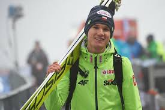
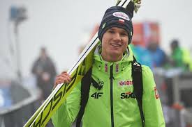
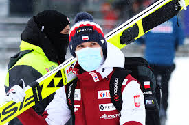
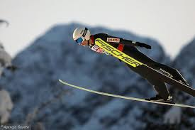

Andrzej Stękała urodził się 30 czerwca 1995 roku w Zakopanem. Pochodzi z Dzianisza, podhalańskiej wsi, w której dorastał wraz sześciorgiem rodzeństwa. Po ukończeniu 18 lat zadebiutował w cyklach zawodów organizowanych przez Międzynarodową Federację Narciarską. W sezonie 2013/2014 czterokrotnie wystąpił w FIS Cup, dwukrotnie zajmując miejsce w czołowej trzydziestce. W kolejnym sezonie FIS Cup regularnie stawał na podium (zwyciężając czterokrotnie) i ostatecznie wygrał cały cykl. Na mistrzostwach Polski w marcu 2015 roku wywalczył srebrny medal, przegrywając tylko z Kamilem Stochem. 10 lutego 2016 roku w Trondheim Andrzej Stękała zajął 6. miejsce. Po sukcesie tym mówił: “Wcale nie jestem jakimś utalentowanym skoczkiem. Do tego miejsca, w którym jestem doszedłem tylko ciężką pracą. Dzięki niej można zdobyć wszystko“. Cztery dni później w Vikersund skacząc 235 metrów, ustanowił swój życiowy rekord. Był to jego życiowy sezon i ostatni sezon Łukasza Kruczka jako trenera. Końcem lata 2020 roku zaczął skakać coraz lepiej, a 17 października wywalczył wicemistrzostwo Polski. Na inaugurację sezonu 2020/2021 w Wiśle zajął 19. miejsce, z czego ogromnie się cieszył. Od początku 2016 roku czekał aż 1710 dni, aby zdobyć kolejne punkty w Pucharze Świata. W obecnym sezonie regularnie punktuje, często zajmując miejsca w czołowej dziesiątce. 13 grudnia zdobył brązowy medal w drużynie na Mistrzostwach Świata w lotach (Planica). Podczas weekendowych zawodów w Zakopanem, odbywających się 16-17 stycznia 2021 Andrzej Stękała w drużynie zajął 2. miejsce, a w turnieju indywidualnym miejsce 5., najwyższe z naszych reprezentantów. Skoczek na półmetku sezonu zajmuje 13. miejsce w klasyfikacji generalnej.
Andrzej Stękała ma imponujące tatuaże, które świadczą o jego miłości do motoryzacji i Formuły 1. Na ręce ma wizerunek Ayrtona Senny, legendarnego, tragicznie zmarłego kierowcy F1. Posiada także wizerunek siedmiokrotnego mistrza świata F1 – Lewisa Hamiltona oraz bolid utytułowanej stajni Enzo Ferrari. Ma także dwa motywujące napisy: Mistrzowie się nie rodzą, oni się tworzą oraz Możesz latać wysoko.
